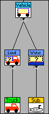

Use the Comparison functions to compare LabVIEW class objects.

If you compare two objects of the same class, for example two objects of the Truck class, LabVIEW compares the data at all levels of the class hierarchy, similar to the manner in which LabVIEW compares a cluster of clusters.
If you compare two objects of different classes, for example an object of the Truck class and an object of the Submarine class, LabVIEW compares the data for as many ancestor classes as the objects have in common. In this case, LabVIEW compares the data of the Vehicle class, the only common ancestor class.
When comparing two objects of different classes, if all data in the common ancestor class or classes is the same, LabVIEW orders the objects based on the following criteria.
LabVIEW orders parent classes before child classes. For example, if you compare an object of the Vehicle class with an object of the Land Vehicle class, LabVIEW orders the object of the Vehicle class first because it is an object of the parent class.
LabVIEW orders first differing classes alphabetically by the name of the class. For example, if you compare an object of the Truck class and an object of the Submarine class, LabVIEW compares the data of the Vehicle class object first, as the common ancestor class. If the data of the Vehicle class object is the same, LabVIEW sorts the data of the Truck object first because of the first differing classes (Land Vehicle and Water Vehicle), Land Vehicle takes priority alphabetically.